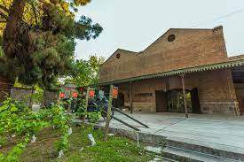

Municipalidad de ciudad
El edificio de la Municipalidad es un claro ejemplo de una arquitectura sin tiempo, capaz de trascender estilos. Resulta atractivo no sólo por su lenguaje brutalista, sino también por su composición con el conjunto, que integran también el Concejo Deliberante y la plaza seca que los antecede. El edificio principal presenta un carácter racionalista, de arquitectura moderna. Se presenta como un volumen puro, enteramente de hormigón, y muestra elementos clásicos del movimiento, como parasoles, casetonados y estructura a la vista. Vale destacar que toma algunos puntos de Le Corbusier como planta libre, estructura sobre pilotes y terraza jardín. Este último nivel se encuentra poblado de canteros y esculturas. Es utilizado frecuentemente como mirador, ofreciendo panorámicas de la montaña, la ciudad y para eventos sociales.
Centro de Congreso y Exposición

El Complejo está conformado por tres edificios, pertenecientes a distintas generaciones arquitectónicas, la conjugación de estas características edilicias, le confieren una importante versatilidad, esto le permite adaptarse a diferentes demandas, pudiéndose desarrollar, desde encuentros exclusivos hasta convenciones multitudinarias. Enclavado en el parque cívico, el complejo recibe el reparo y la tranquilidad necesarios para la realización de congresos y convenciones. Cuenta con sectores exteriores muy propicios para la realización de actividades al aire libre y cómodos accesos con rampas para discapacitados y estacionamiento propio.
Auditorio Angel Bustelo
Salón de Usos Múltiples con capacidad para 2000 personas sentadas, aire acondicionado central frío-calor, sanitarios y todas las comodidades. Equipado con tecnología de última generación en audio, video iluminación, teleconferencias, grabación y traducción simultánea.
Edificio Central
.jpg)
Ocho salas de uso simultáneo en tres plantas con capacidades que van desde 100 a 600 personas sentadas con aire acondicionado, calefacción y sanitarios en todos los pisos, servicio de limpieza permanente y listado de proveedores de servicios de excelencia en todos los rubros que las actividades demandan. Espacios libres en todos los pisos para acreditación o recepción.
Enoteca
Ex Bodega modelo perteneciente a la antigua quinta agronómica y fue declarada patrimonio histórico y cultural de los mendocinos. Multiespacio donde se realizan exposiciones y presentaciones de arte, charlas, conciertos y otras actividades de carácter histórico cultural. La Enoteca brinda el marco ideal para realizar variadas de-gustaciones de nuestros mejores vinos y cursos de cata dirigidos a asistentes a los congresos, convenciones y al público en general.
Casa de Gobierno
La Casa de Gobierno sintetiza elementos ambos lenguajes que se traducen en el uso de escaleras y columnatas colosales, arcadas y tejados y materiales regionales como la piedra. Modelos a nivel internacional en esta tipología son el Palacio de la Moneda en París y el Ministerio de Guerra en Buenos Aires.
Palacio de justicia
La Unidad de Transformación y Desarrollo Institucional es una dependencia de la Suprema Corte de Justicia de Mendoza que fue creada en el año 2007 con el objetivo de implementar, coordinar y gestionar proyectos de desarrollo y modernización del Poder Judicial de Mendoza. Se caracteriza por su capacidad creativa y desarrollo integral de proyectos. Motivada por la necesidad de "producir cambios que garanticen y agilicen el servicio de justicia en búsqueda de optimizar los recursos existentes, tanto intelectuales como físicos y materiales", para poder dar respuestas a los requerimientos de la sociedad en los tiempos actuales, esta Unidad comenzó a trabajar como una unidad de gestión. Está formada por un equipo interdisciplinario de personas que trabaja y participa de manera comprometida en los proyectos que se encuentran en etapas de planificación, desarrollo y seguimiento